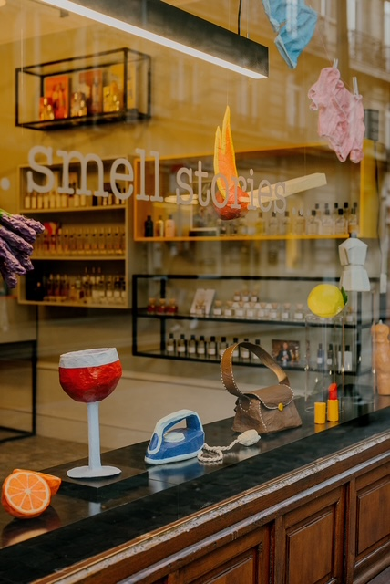
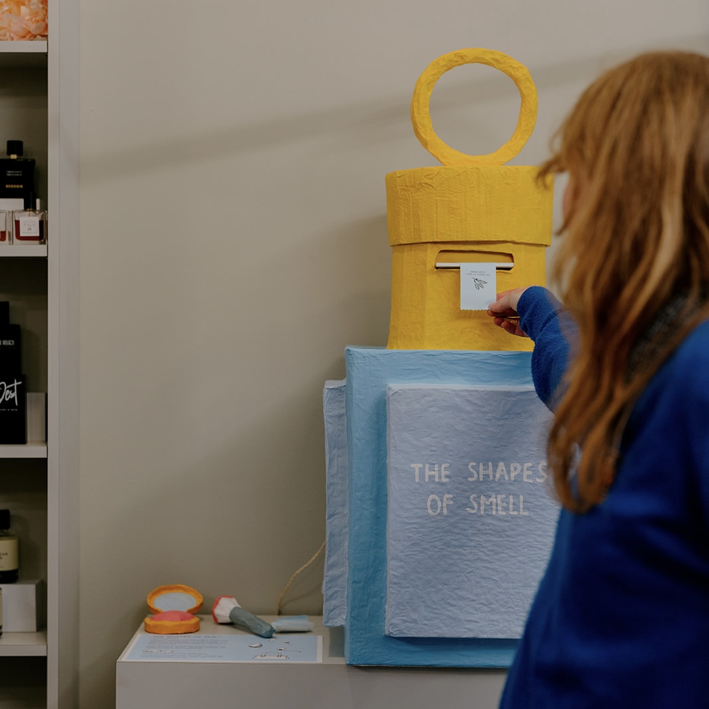
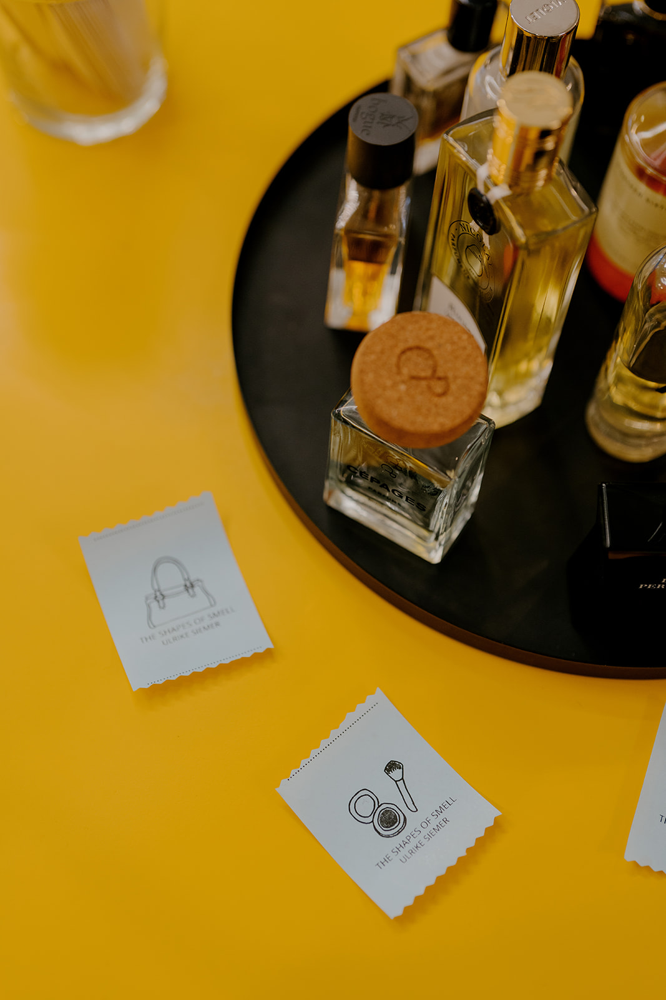

Every smell comes in its own shape. Shapes can remind us of scents, maybe the coffee you had this morning, a certain flower you used to smell when visiting your grandparents, or that moment as a child, watching someone ironing and feeling both afraid of the heat and fascinated by the smell, so clean and so warm. I created some of these shapes of smell, objects that evoke moments in life, especially through the fragrances tied to them. A project in collaboration with the perfume store smell stories during MAD Parcours 2025 in Brussels. Visitors were invited to discover the sculptural installation as well as activate a sculpture at obtain a souvenir in form of a scented drawing.


